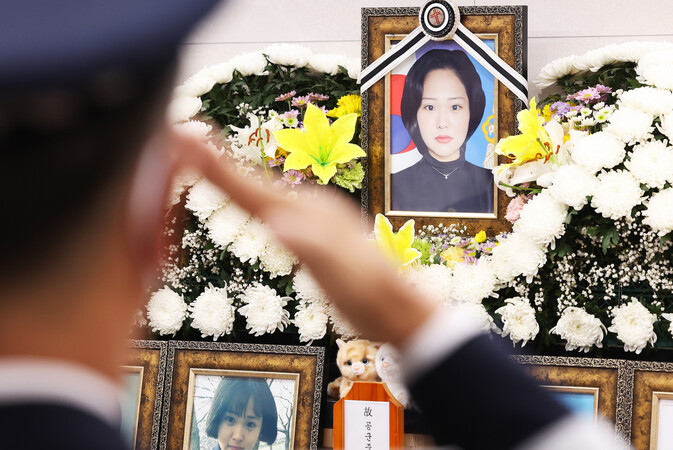
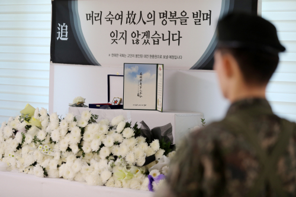

끊이지 않는 군부대 사망사건
군부대 사망사건이 끊이지 않고 있습니다. 병영 내 가혹행위와 괴롭힘이 지휘관과 병사 간, 그리고 장병 간 참극으로 이어지고 있으며, 이는 어제오늘의 일이 아닙니다. 군부대 사망사건에 대한 철저한 진상규명과 함께 관계자에 대한 실체적인 처벌, 그리고 재발 방지를 위한 근본적인 대책 마련이 시급히 요구됩니다.
"2021년 군 인권침해 사고가 연달아 발생했습니다. 자가격리 장병의 부실 식사, 육군훈련소의 과도한 통제, 공군 여부사관 성추행 피해 후 사망 사건 등은 군 인권침해에 대한 사회적 우려를 다시 한번 깊게 만들었습니다." - 국회입법조사처, "군 인권 제도 현황과 개선과제" (2021.12.16.)
최근 사건 사례: 12사단 훈련병 사망 사건
2024년 5월 25일, 강원도 인제 육군 제12보병사단 신병교육대에서 입소 12일차 훈련병이 군기훈련 중 쓰러져 끝내 숨지는 안타까운 사건이 발생했습니다. 고온의 날씨 속에서 약 32kg에 달하는 완전군장을 착용한 채 연병장을 달리고 팔굽혀펴기를 반복하던 중이었습니다. 해당 군기훈련은 지휘관 지시 불이행을 이유로 내려진 징계성 훈련이었습니다.
법적 쟁점과 재판부 판단
1심 재판부는 중대장과 부중대장에게 각각 징역 5년과 3년을 선고하며, 학대치사죄와 직권남용가혹행위 혐의 모두를 유죄로 인정했습니다. 다만 '상상적 경합' 법리에 따라 가장 무거운 죄인 학대치사죄만을 기준으로 형을 정했습니다.
- 상상적 경합: 하나의 행위가 두 개 이상의 범죄에 해당할 때, 형법상 가장 무거운 죄 하나만으로 처벌하는 방식.
- 실체적 경합: 각각의 범죄 행위를 독립된 범죄로 보고 개별적으로 형을 부과하는 방식.
검찰은 반복된 지시와 체벌이 각각 별개의 위법 행위라며 실체적 경합 적용을 주장했으나, 재판부는 하나의 연속된 군기 훈련으로 판단하여 상상적 경합을 적용했습니다.
2014년: 윤일병 구타 사망 사건
기사와 관계 없는 사진 연합뉴스=airan@yna.co.kr
사망일: 2014년 4월 7일 (폭행은 3월부터 지속)
육군 제28보병사단 의무대에서 복무하던 윤승주 일병이 선임병들로부터 상습적인 구타와 가혹행위에 시달리다 사망한 비극적인 사건입니다.
주요 경과
- 2014년 3월 초부터 약 한 달간 선임병들에 의한 폭행, 인격모독, 음식물 강제 섭취, 잠 안 재우기 등 비인간적인 학대가 지속되었습니다.
- 4월 6일, 윤 일병은 냉동식품을 먹던 중 가슴을 가격당해 쓰러졌고, 응급조치를 받았으나 다음 날인 4월 7일 사망했습니다.
- 사건 초기에는 단순 질식사로 은폐하려 했으나, 동료 병사들의 양심선언과 시민단체의 노력으로 진실이 드러나기 시작했습니다.
결과 및 영향
- 주범 이모 병장은 상해치사죄 등으로 징역 40년이 확정되었고, 다른 가해자들도 중형을 선고받았습니다. (초기에는 살인죄가 적용되었으나 대법원에서 상해치사죄로 변경됨)
- 군대 내 가혹행위와 인권 유린의 심각성이 사회적으로 큰 충격을 주었으며, 병영 문화 개선에 대한 국민적 요구가 빗발쳤습니다.
- 국방부는 '병영문화혁신위원회'를 출범시키고 다양한 병영 문화 개선 대책을 발표하는 계기가 되었습니다.
- 군 인권 문제에 대한 사회적 경각심을 높이고, 군 사법 시스템의 문제점을 드러내는 중요한 사건으로 기록되었습니다.
2014년: 임병장 총기 난사 사건
강원일보(공동사진취재단) 제공
발생일: 2014년 6월 21일
강원도 고성군 육군 제22보병사단 일반전초(GOP)에서 임도빈 병장이 동료 장병들을 향해 총기를 난사하고 수류탄을 투척하여 5명이 사망하고 7명이 부상당한 사건입니다.
주요 경과
- 2014년 6월 21일 저녁, 주간 경계근무를 마치고 복귀한 임 병장이 GOP 소초 생활관 등에서 K-2 소총을 난사하고 수류탄 1발을 투척했습니다.
- 범행 후 무장 탈영하여 도주했으며, 군 병력과의 대치 끝에 6월 23일 자살을 시도하다 체포되었습니다.
원인 (추정)
- 군 복무 부적응이 주요 원인으로 지목되었습니다.
- 선임 및 동료 병사들로부터의 집단 따돌림, 언어폭력, 무시 등도 복합적으로 작용한 것으로 알려졌습니다.
- 사건 전 임 병장이 그린 그림 등에서 부대 생활에 대한 불만과 분노가 표출된 정황이 발견되기도 했습니다.
결과 및 영향
- 임도빈 병장은 군사법원에서 사형을 선고받고, 2016년 대법원에서 사형이 확정되었습니다.
- GOP 부대의 총기 및 수류탄 관리 시스템의 허점이 드러났으며, 병사들의 복무 스트레스 및 정신건강 관리 시스템에 대한 점검과 개선의 필요성이 제기되었습니다.
- 군내 집단 따돌림 및 괴롭힘 문제의 심각성을 다시 한번 환기시키는 계기가 되었습니다.
2021년: 공군 이예람 중사 사망 사건

군인권센터 제공
사망일: 2021년 5월 22일 (성추행 피해 발생: 2021년 3월 2일)
공군 제20전투비행단 소속이었던 이예람 중사가 선임 부사관으로부터 성추행을 당한 후, 군 내부의 부실한 대응과 조직적인 회유, 압박 등 2차 가해에 시달리다 극단적인 선택을 한 사건입니다.
주요 경과
- 2021년 3월 2일, 이 중사는 회식 후 복귀하는 차량 안에서 선임 장 모 중사로부터 성추행 피해를 당했습니다.
- 피해 사실을 즉시 보고했으나, 군 내부에서는 사건 무마 시도와 함께 이 중사에 대한 회유와 압박이 이어진 것으로 알려졌습니다.
- 이 중사는 청원휴가를 내고 다른 부대로 전출되었으나, 지속적인 정신적 고통을 호소했습니다.
- 결국 2021년 5월 21일 혼인신고를 한 당일, 관사에서 스스로 목숨을 끊었고 다음 날인 22일 발견되었습니다.
결과 및 영향
- 사건이 언론을 통해 알려지면서 국민적 공분을 샀고, 국방부 특별수사단이 구성되어 수사에 착수했습니다.
- 가해자 장 모 중사를 비롯한 관련자 다수가 징계를 받거나 사법 처리되었습니다. (장 중사는 1심에서 징역 9년 선고, 항소심에서 감형 후 대법원에서 징역 7년 확정)
- 군 사법체계의 폐쇄성과 성폭력 사건 처리 과정에서의 문제점이 심각하게 드러나면서, 군 사법체계 개혁과 군대 내 성폭력 대응 시스템 개선에 대한 강력한 요구가 분출되었습니다.
- '고 이예람 중사 사망 사건 진상규명을 위한 특별검사 임명 등에 관한 법률안'(이예람 특검법)이 국회를 통과하여 특검 수사가 진행되었습니다.
- 군 인권 보호와 성범죄 근절을 위한 사회적 논의를 촉발시킨 중요한 사건으로 평가받습니다.
2024년: 육군 12사단 훈련병 사망 사건

강원일보 제공
사망일: 2024년 5월 25일 (군기훈련 중 쓰러짐: 5월 23일)
강원도 인제군 육군 제12보병사단 신병교육대에서 군기훈련(얼차려)을 받던 훈련병 6명 중 1명이 쓰러져 민간병원으로 후송되었으나 이틀 만에 사망한 사건입니다.
주요 경과
- 2024년 5월 23일 오후, 훈련병 6명이 군기훈련을 받던 중 1명이 쓰러졌습니다.
- 쓰러진 훈련병은 속초의료원으로 이송되었으나 상태가 악화되어 강릉아산병원으로 옮겨졌고, 5월 25일 사망했습니다. 사인은 패혈성 쇼크에 따른 다발성 장기부전으로 알려졌습니다.
- 군기훈련은 완전군장 상태로 연병장을 도는 것, 팔굽혀펴기 등으로 구성되었으며, 훈련병이 쓰러지기 직전 건강 이상 징후를 보고했으나 묵살되었다는 의혹이 제기되었습니다.
논란 및 쟁점
- 군기훈련 규정 위반: 완전군장 구보, 팔굽혀펴기 등 육군규정에서 명시한 군기훈련 범위를 벗어난 가혹행위라는 지적이 있습니다. (예: 완전군장 상태에서는 걷기만 가능, 팔굽혀펴기는 맨몸으로만 가능)
- 응급처치 미흡: 훈련병이 쓰러진 후 즉각적인 응급처치 및 후송이 제대로 이루어지지 않았다는 의혹이 제기되었습니다.
- 사건 초기 축소/은폐 의혹: 군 당국이 사건 발생 초기 상황을 정확히 알리지 않고 축소하려 했다는 비판이 있었습니다.
현재 상황
- 경찰은 해당 부대 중대장과 부중대장을 업무상과실치사 및 직권남용가혹행위 혐의로 수사 중입니다.
- 2024년 6월 11일 오후 2시에 서울고법 춘천재판부 형사1부(이은혜 부장판사)에서 중대장과 부중대장에 대한 항소심 선고 공판이 예정되어 있습니다.
- 이 사건을 계기로 군기훈련 제도의 문제점과 신병 인권보호 강화의 필요성이 다시 한번 사회적으로 크게 대두되었습니다.
사건 이후, 제도적 공백과 과제
12사단 훈련병 사망 사건은 가혹행위가 구조화된 병영 내 문화와 이를 제어하지 못한 지휘체계의 총체적 실패를 보여줍니다. 그러나 사건 이후의 진상규명 체계는 더욱 근본적인 한계를 드러내고 있습니다.
군사망사고 조사 체계의 변화
군사망사고진상규명위원회 (진상위)
2023년 9월 활동이 종료되었습니다. 과거 발생한 군 사망사건에 대한 진실 규명을 목표로 운영되었으나, 활동 기간 및 권한의 한계 등으로 모든 사건을 다루기에는 어려움이 있었습니다.
신청주의에 따른 조사 한계로 인해 많은 사건이 제대로 규명되지 못했다는 지적이 있습니다.
군인권보호관 제도
진상위 종료 후 군 복무 중 사망사건 조사가 국가인권위원회 산하 군인권보호관 제도로 이관되었습니다.
그러나 수사권과 불시 방문조사권이 없어 실질적이고 독립적인 조사에 한계가 있다는 비판이 제기되고 있습니다. 이로 인해 12사단 사건과 같이 이미 수사나 재판이 진행 중인 경우, 인권위가 별도 의견을 내기 어려운 상황이 발생하기도 합니다.
제도 개선을 위한 전문가 제언
조사 체계의 실효성 강화
전문가들은 군 사망사건에 대한 독립적이고 실효성 있는 조사 기구의 필요성을 강조합니다. 이를 위해 다음 사항들을 제언합니다:
- 군사망 사건 직권조사 상시화
- 군인권보호관의 강제조사권 부여
독립적 전담 조직 운영
조사의 독립성과 전문성을 확보하기 위해 전담 조직의 독립성 강화 및 충분한 인력 보강이 필수적입니다. 또한, 과거 사건에 대한 일괄 재심사제 도입도 검토할 필요가 있습니다.
국가의 근본적 책무
단순히 사건 책임자 처벌을 넘어, 유사 사건 재발 방지를 위한 구조적 개선과 예방 시스템 구축이 중요합니다. 이는 병영 문화 개선과 군 인권 보호를 위한 국가의 근본적인 책무입니다.
군 인권 제도 개선 과제 (국회입법조사처)
지속적인 인권침해 발생에 따라 다음과 같은 근본적인 개선이 요구됩니다:
- 신고·상담 센터의 접근성 및 실효성 강화
- 실질적이고 체감 가능한 군 인권교육 시행
- 군인권보호관 제도의 권한 강화 및 운영 내실화